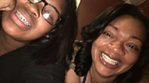

I live in an apartment with my mother and a 11 year old sister,I have a brother but he lives in Columbia.My family is crazy,
we tell corny jokes.My home is full of laughter. We love to dance,when a good song comes on you can catch us three
dancing.We all collect things,not on purpose but it's just the things we have most of,my mom collects wrist watche bands,I
collect shoes and put them on my wall, and my sister collects junk on her bedroom floor.
My family in columbia are pretty laid back. When everyone hears that we are coming home for the weekend, they all gather
at my aunt bell house and hang,maybe even throw something on the grill.My dad's side of the family are more on the boring side.
My grandparents are old and all we talk about is school and what college I'm going to. The fun things we do with my dad's side
of the family is go to Disney every year and we have our family reunions.For our reunions we go to a big park called Sesquicentenial State Park.It has a lake and a big walking trial, you can talk little paddle boats on the lake.